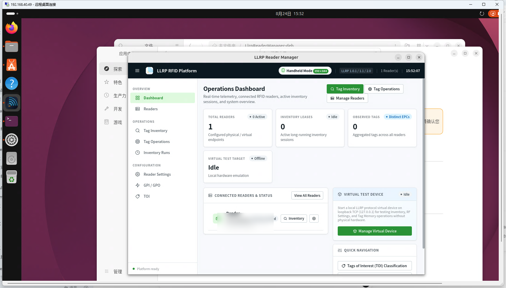

05 / LINUX GTK4 HEAD
LlrpReaderManager · Linux GTK4 操作手册
LlrpReaderManager.Linux 是基于独立 GTK4 + WebKitGTK 宿主构建的 Linux 客户端。 复用平台共享服务与 Blazor 页面，适用于 Ubuntu / Debian 工业工控机、边缘网关与开发工作站。
1. 安装与 DEB 包部署
从 Releases 页面下载 LlrpReaderManager-v2.0.3-linux-x64.deb，在终端中执行安装：
sudo dpkg -i LlrpReaderManager-v2.0.3-linux-x64.deb
sudo apt-get install -f -y2. 运行时依赖配置
Linux Head 为框架依赖（Framework-Dependent）分发模式，目标机器需具备以下基础运行环境：
- .NET 10 Runtime：
dotnet-runtime-10.0（或通过微软官方源安装）。 - GTK4 视窗库：
libgtk-4-1或libgtk-4-dev。 - WebKitGTK 渲染器：
libwebkit2gtk-4.1-0(或 Ubuntu 24.04 的libwebkitgtk-6.0-4)。
# Ubuntu / Debian 快速安装依赖
sudo apt update
sudo apt install -y libgtk-4-1 libwebkit2gtk-4.1-03. 启动与界面展示
安装完成后，可从 Linux 桌面应用菜单（Applications Menu）启动 LlrpReaderManager，或在终端输入：
LlrpReaderManager
4. 操作流程
- 在 Readers 页面添加本地或网络读写器 IP（例如
192.168.1.100:5084）。 - 点击 Probe 自动协商协议版本与能力，确认后点击 Enable 启用。
- 在 Tag Inventory 页面点击 Start 启动长连接寻卡，实时获取标签流。
- 在 Reader Settings 中编辑射频参数，按 Query → 编辑 → Apply 流程保存配置。
5. 注意事项
提示：
Linux GTK4 Head 当前作为跨平台扩展路径分发。若在无头服务器（Headless Server）或通过 SSH X11 Forwarding 运行时，需确保目标环境已配置好 X11 / Wayland 显示服务（DISPLAY 环境变量正确设置）。